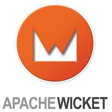

BreizhJUG
AngularJS chez les Javaistes
Sébastien Brousse
Sébastien BROUSSE
- Développeur/Formateur chez Zenika Ouest
- Intégration: Apache Camel, ActiveMQ, CXF, ...
- Build & Delivery : Jenkins, Maven
- Devops à mes heures perdues
- Twitter : @seb_brousse
Disclaimer
"I am a back end Developer !"
Le Web en Java
Struts 1.x
2000-2013
Le cas d'usage
- Une équipe Java/GWT de 6 personnes
- 1 appriori :
le Javascript c'est le mal
- mais avec l'envie d'essayer
Une application de gestion
- Des champs éditables en fonction de l'état des données et des droits utilisateurs
- Des widgets "communicants"
- Des widgets "complexes" (Arbres, Datagrid, etc)
Les - :
- $%!@# de Typo !
- La doc officielle
- Certaines API pas très accessibles
- Les directives
Les + :
- Assez proche d'un DSL
- La communauté : ngmodules.org
- La plupart des fonctionnalités : Filters, Services, Dual Binding
Les trucs qui aident :
La gestion événementielle
$scope.$on('event:loginRequest', function(event, username, password) {
var payload = $.param({j_username: username, j_password: password});
$http.post('j_spring_security_check', payload)
.success(function(data) {
if (data === 'AUTHENTICATION_SUCCESS') {
$scope.$broadcast('event:loginConfirmed');
}
});
});
Les trucs qui aident :
Les interceptors
myapp.config(function($httpProvider) {
var interceptor = ['$rootScope', function(scope) {
function success(response) {
return response;
}
function error(response) {
var status = response.status;
if (status == 401) {
console.log("Unauthorized");
scope.$broadcast('event:loginRequired');
return response;
}
[...]
}
return function(promise) {
return promise.then(success, error);
}
}];
$httpProvider.responseInterceptors.push(interceptor);
});
Les trucs qui aident :
URLs en trompe l'oeil
myApp.config(function($locationProvider) {
$locationProvider.html5Mode(true);
});
www.myapp.com/#/data/1 devient www.myapp.com/data/1
AngularJS
Ce que devrait être GWT en 2013 !
Concepts très proches :
- IHM côté client
- code structuré MVC & modulaire
- Injection de dépendances !!!
- REST friendly
- Callbacks asynchrones
- Utilisation directe des standards du Web
Conseil 1
Ne pas chercher mixer les 2 mondes
- Plugins Maven javascripts
- Pas très compatible avec l'outillage de base Java
- Déploiement Java pour du JS
Conseil 2
Utilisez un Starter
Conseil 3
Mais ça ne se voit pas ...
- Les données gérées par Angular ont un impact même si on ne les voit pas
- Évitez de surcharger les écrans
Conseil 4
Protégez l'environnement
Les outils
Yeoman
Ensemble d'outils augmentant la productivité de projets Javascript
- Un générateur de projet pré-configuré
- Une gestion de dépendances
- Un exécuteur de taches (avec cycle de vie)
Yo
Yo
Le générateur
- Tout type de techno JS
- Arborescence standard
- Bootstrap & Boilerplate code
- Préconfigure les autres outils
- Pleins de bonnes pratiques
Bower
Bower
Le gestionnaire de dépendances
- Un repository local & "central"
- Des artefacts versionnés
- Recherche d'artefacts
- Ligne de commande
Grunt
Grunt
Automatisation de taches
- Lancement des tests
- Lancement d'un serveur HTTP en live reload
- Qualimétrie
- Minification, Sprites
- Préprocesseurs CSS
Karma
Lanceur de tests Unitaires & E2E
- Framework Agnostique (Jasmine, Mocha, ...)
- Lancement en tache de fond
- Multi navigateurs
- Couverture de code
- Préprocesseurs